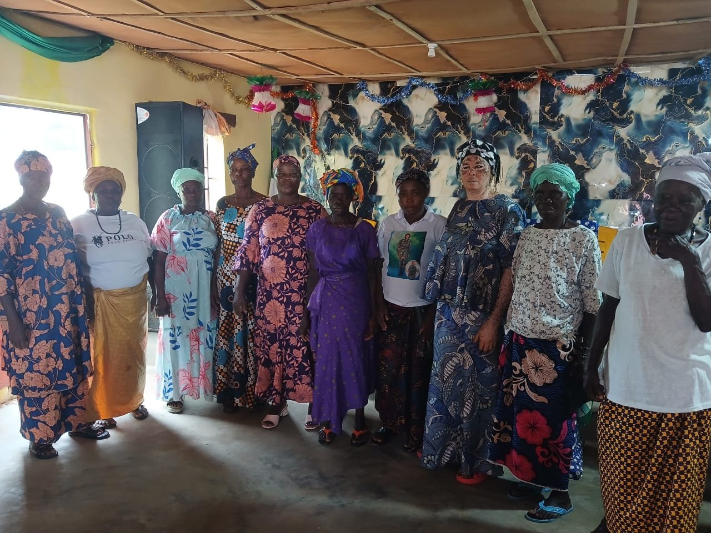

Home / About
About CIMSL
Children Integrated Missions exists to restore hope and create opportunities for orphaned, abandoned, vulnerable and disadvantaged children across Sierra Leone.

More than aid — holistic development
Children Integrated Missions (CIM) works with orphaned, abandoned, vulnerable and disadvantaged children, walking with them beyond immediate relief toward long-term wellbeing.
We provide quality care, educational support, healthcare, mentorship, practical life skills, emotional support and values development — delivered with families, schools, churches, government institutions and local communities.
- Orphaned & abandoned children
- Vulnerable & disadvantaged children
- Families and the communities around them
Our Mission
To restore hope and improve the lives of orphaned, abandoned, vulnerable and disadvantaged children by providing quality care, education, healthcare, mentorship and life-changing opportunities.
Our Vision
A Sierra Leone where every child is protected, supported, educated and empowered to reach their full potential.
What we are working toward
Child welfare & hygiene
Seek the welfare of children through provision of hygienic supplies.
Child protection advocacy
Engage decision makers to formulate and enforce laws protecting children.
Academic development
Academic forums where school-going children interact, learn and debate.
Child rights awareness
Raise awareness of rights, responsibilities and referral pathways.
Institutional collaboration
Engage ministries, councils and local authorities for children's benefit.
Support marginalised children
Identify vulnerable children and open life-improving opportunities.
Community-rooted, child-centred, practical
We work with families, schools, churches, government institutions and local communities — not around them. That means mentorship alongside material help, hygiene alongside healthcare, and advocacy alongside everyday care.
🛡️ Protection first
Safety, dignity and safeguarding shape every activity.
🌱 Sustainable change
Skills, systems and relationships that outlast any single project.
Rooted in Wellington, serving Sierra Leone
Based at 50 Conteh Street, Peacock Farm, Wellington, Freetown, we serve children and families across surrounding communities — partnering with schools, faith groups and local authorities wherever children need us most.

Why our work matters
Children deserve safety, education, healthcare, dignity and opportunity. See our impact framework →